00:00 AM
MARKET OPEN
Some things are calculated.
Some things are chased.
Some things are worth the risk.
And then, there are some things you don't plan for at all.
Shushant
Scroll slowly.
Click anywhere to begin.
Somewhere between a thousand ordinary moments,
you became something I could never call ordinary.
Shushant,
I still remember the first time I confessed my feelings to you, on the 8th of November. I was so unsure of what I was feeling then. I didn't really know what exactly was happening inside my head and I definitely never thought that I would end up falling for you. But somehow, even before I could name what I was feeling, there was something different about your presence. From the day I spent time with you, I knew there was something about you that stayed with me. I couldn't explain it, and I wasn't even sure whether I was supposed to call it anything. It just felt different. Then came those next few months of trying to understand myself, slowly discovering you, understanding the person behind that quiet, nonchalant exterior and somewhere in between all of that, I realised that I wasn't merely getting to know you anymore...I was falling for you ❤️
It took me almost ten months to finally become completely sure of what I felt...unsure, thinking, discovering, overthinking... but then came the 8th of September, when you gave me that beautiful proposal and I finally accepted it, officially becoming your girlfriend. Yesssss, YOUR GIRLFRIEND. 😭❤️ And now that we're actually here, I have to admit something. As happy as I am, there is still this huge fear somewhere inside me. I hope you love me. I hope you continue loving me. I hope the way you feel about me today doesn't become something ordinary with time. And maybe that sounds selfish, but when it comes to love, I think I am a little selfish.
I want to love you so much that you genuinely feel lucky that you found me, the same way I already feel lucky that I found you. I want to be someone whose absence you notice, whose presence makes your day a little better, whose name makes you smile. ❤️
You know when sometimes you say that money is everything to you, that thought scares me a little. To me, love is everything...I wanna be with you even if you have nothing. Maybe that sounds childish... maybe it is.... I've always wanted a relationship where people love each other a lot. I want the companionship. Of course I want you to get rich, live your dream life and we live happily, enjoy... but I also want the kind of happiness that doesn't depend on how expensive the dinner was but on how much we laughed during it. 🥹❤️ And sometimes this even makes me wonder whether you'll be able to love me the way I want to be loved. Not just a little. Not just enough. But so much that it becomes one of those ridiculous love stories people secretly wish they had. I know I sound delusional when I say this, but honestly, I am. When it comes to you, I am. My man is my man. Just mine. ❤️ There is this part of me that desperately wants to have a place in your life that feels uniquely mine. A place that nobody from your past can take and nobody from your future can replace. I just want to know that somewhere in this huge world, there is one little corner of your heart where I belong. 🫶🏻
And whenever you tell me, “Don't worry, you'll be very happy with me,” something inside me becomes so strangely calm. Because if you say that, then I can believe it. Maybe I genuinely will be the happiest person. I don't need some perfect life. I just want to know that whatever life becomes, I have you beside me and you have me beside you. That is the kind of happiness I understand. ❤️
Shushant, today when I say this, I don't want it to sound like just another romantic sentence. I genuinely mean it. I REALLY, REALLY LOVE YOU. From the deepest chambers of my heart... I don't even know how to explain it properly. And perhaps that's why I write so much. Because every time I try to put what I feel into words, there is still something left inside me that feels bigger than the sentence I just wrote. I wish to write all my happy metaphors about love for you now and forever. I don't want to fall in love with you only today. I want to fall in love with you daily, through every new version of you I get to know. I want to know the ambitious you, the exhausted you, the quiet you, the hardworking Mr. President, the ridiculously nonchalant you, the boy who needs to be reminded to take a break, the man with dreams and responsibilities, and even the version of you who occasionally manages to drive me absolutely insane. 😂❤️ I want to know what makes you happy, what scares you, what keeps you awake, what you dream about, what you need when you're having a terrible day, and what makes you feel loved even when you don't say that you need it... I even want the boring Mondays, the stressful mornings, the random calls, the stupid arguments that we'll probably laugh about later, the days when one of us doesn't know what to say, the celebrations, the failures, the journeys, the chaos, EVERYTHING. Because when I said I wanted a love that lasts, I never meant a love that exists only when everything is easy. I meant us through all of it. ❤️ I hope you remember when I told you that I want a love that goes far and lasts forever, like my sister's love story and actually even more beautiful. I still mean that. I don't want to be your girlfriend for a few years and then become a beautiful chapter you remember when you look back at your younger years. I want to be your partner. I want to grow beside you, watch you become everything you dream of becoming, celebrate your successes like they're my own, and sit beside you through the failures too.
And I promise I'll try to understand you. Your priorities, your work, your responsibilities, your availability, your need for space, your silences. I know myself well enough to know that I will overthink sometimes. I will probably need reassurance sometimes. My brain has this absolutely ridiculous habit of taking one tiny sentence and turning it into an entire series. 😭 But eventually, I will try to believe you. Because I trust you. I trust you a lot. And that is why, Shushant, please never break that trust. Never hide things from me. Never lie to me... no lie will ever impress me because I'm already impressed by you. ❤️
I want you exactly as you are and I hope you will always feel safe enough with me to be that person. I hope you can tell me things without worrying that I'll judge you and be vulnerable without feeling weak. I hope you can be completely yourself with me, the way you are with Anjanay, where you don't have to think twice about being stupid, laughing, talking about anything, or simply existing. I don't just want to be your lover. I want to be your bestest friend too. I want us to have love, but I also want us to have fun...inside jokes, stupid conversations...❤️
I don't want us to spend our whole relationship trying to prove that we're meant for each other. I want us to simply keep choosing each other. Again and again. Until one day we look back and realise that all those tiny choices somehow became a lifetime. I hope someday we grow old enough that these messages become memories and we laugh at how dramatic I was. I hope I'll still be sitting beside you then, still irritating you, still overthinking, still writing ridiculous metaphors about you, and somehow still falling for you. ❤️
And if I could ask God for one thing about us, I wouldn't ask for a perfect relationship. I'd simply ask Him to let us become good for each other. Let us understand each other, care for each other, protect what we have, stand for each other, keep each other happy, and never become careless with each other's hearts. And if we really are meant to be for each other, then let this love go all the way. Let it reach our last breath.
And if somehow we weren't meant for each other...
then, God, please make us.
Because I really, really want this one. ❤️
So, Mr. President... Happy Boyfriend's Day. ❤️
And congratulations. You have somehow acquired a girlfriend who overthinks a lot, feels everything a little too deeply, writes far too much, loves far too hard, gets ridiculously possessive about the person she loves, and will probably turn random moments of your life into paragraphs someday. This girlfriend of yours is very different from all the people you've met in your life. She worries, she gets scared, she needs reassurance sometimes, and she is definitely a little delusional. 😂 But most importantly, she loves you a lot!
And she doesn't just want to be your girlfriend. She wants to be your person. Your lover, your best friend, your safe place, and the person you can be completely yourself with.
With all the love I currently know how to give,
Your girlfriend. ❤️
P.S. You once told me, “Don't worry, you'll be very happy with me.”
I'm holding you to that, Mr. Shushant. ❤️
Love you. ❤️
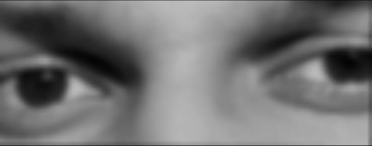
I think I could get lost here.
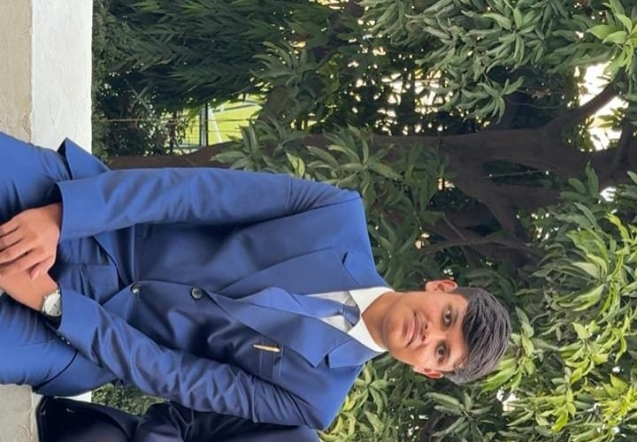
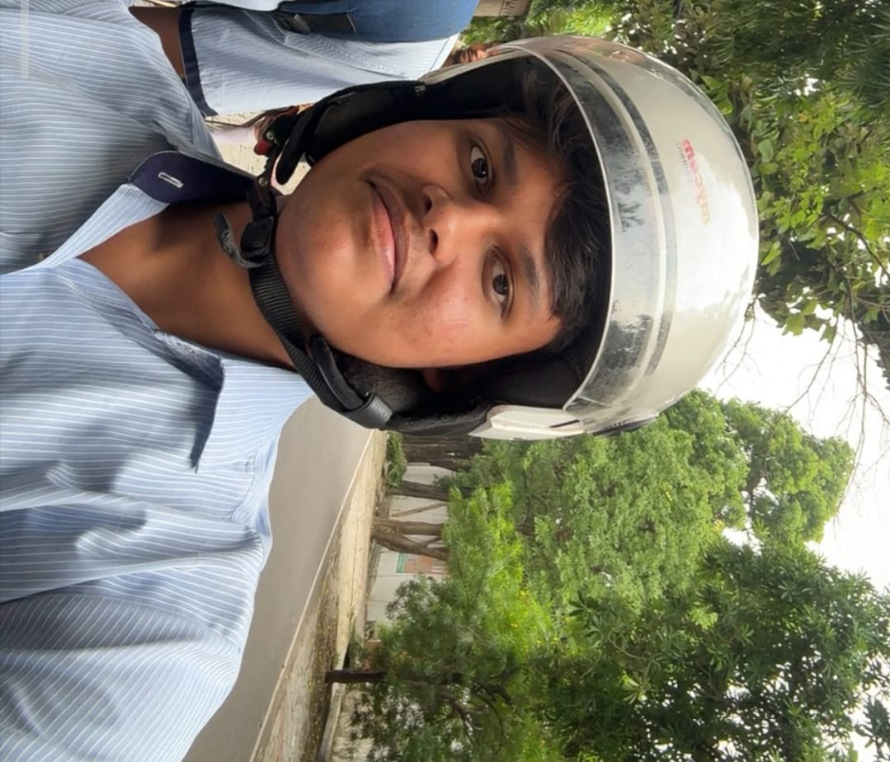
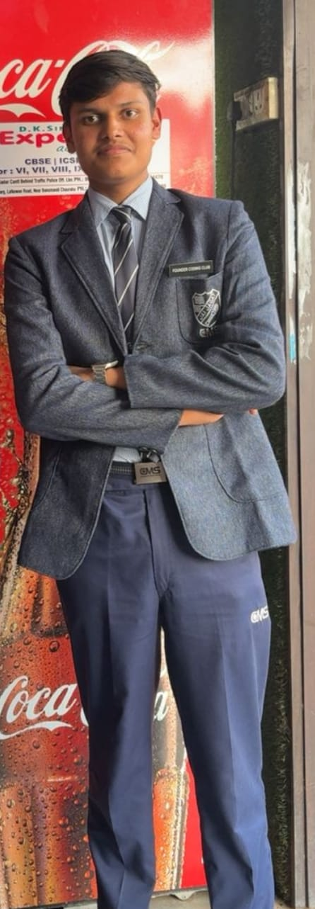
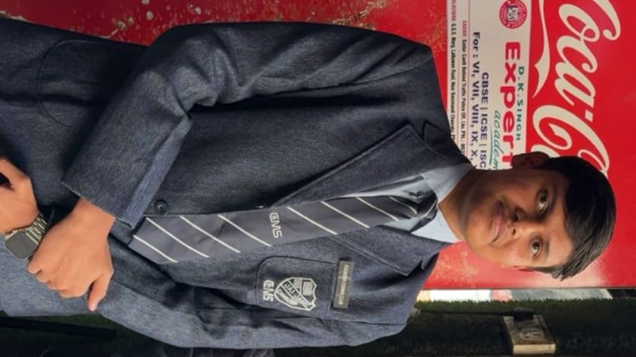
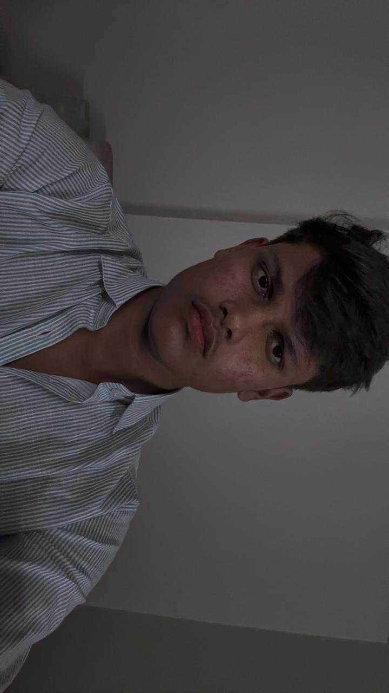
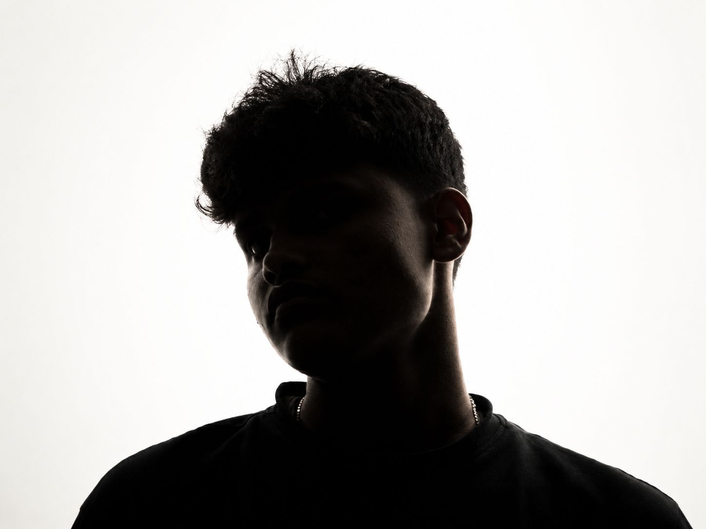
See how handsome you are. ❤️
Click more often. Your girlfriend clearly needs more pictures of you.
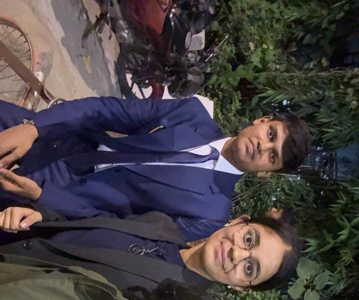
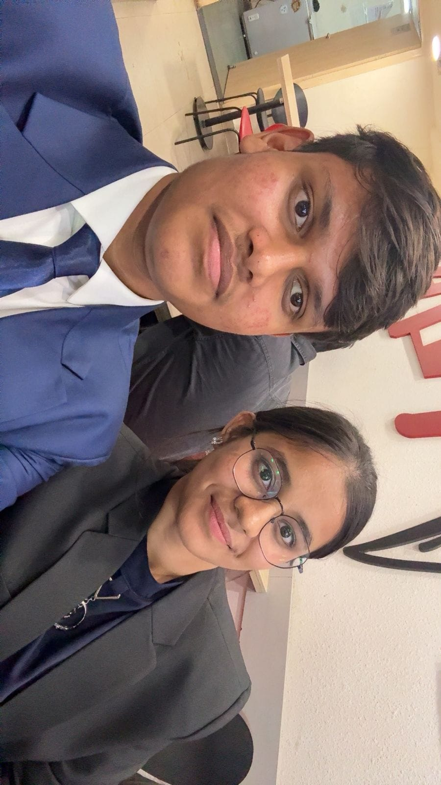
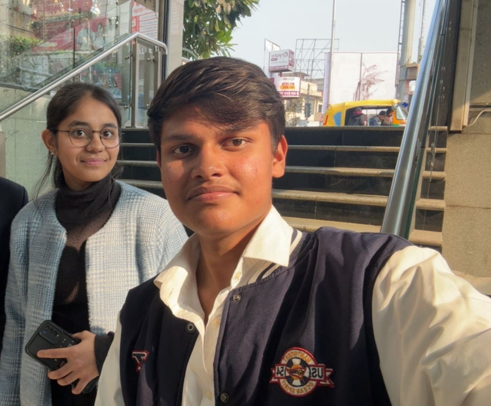
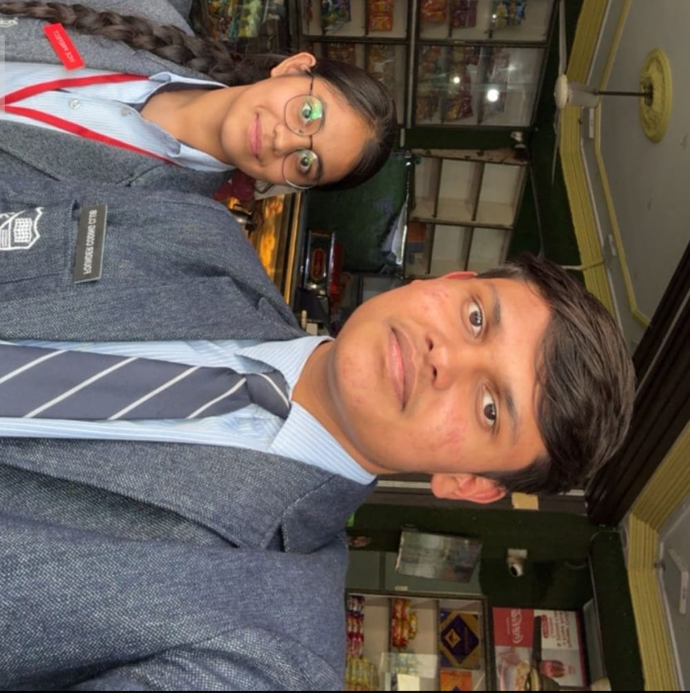
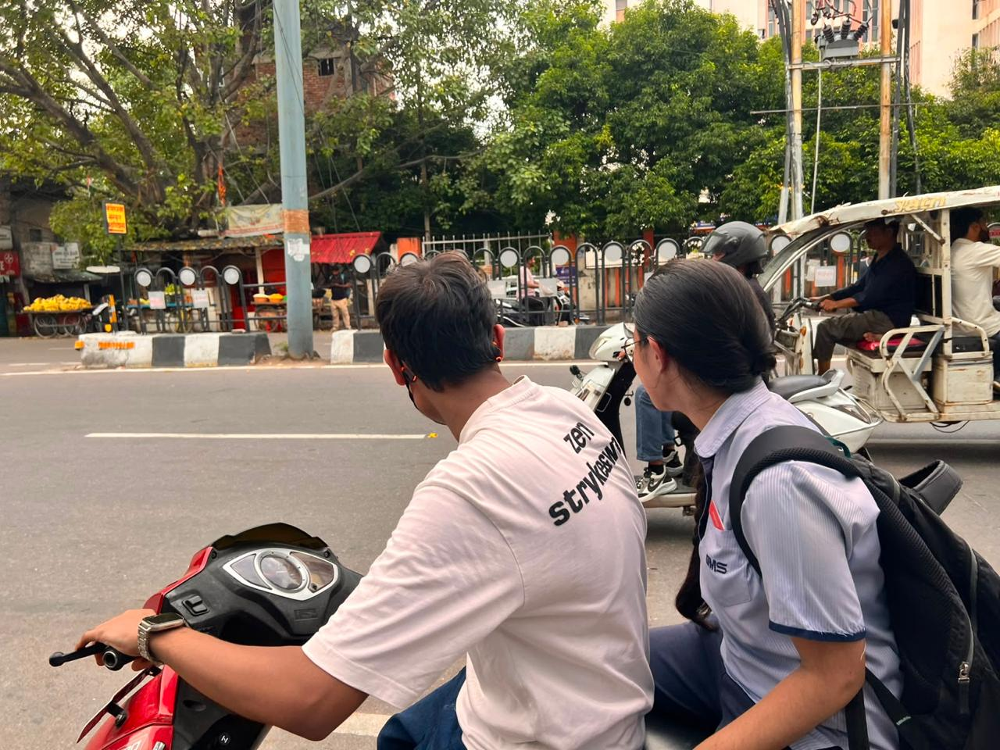
I don't think I'd mind getting lost, if I am in the passenger seat.
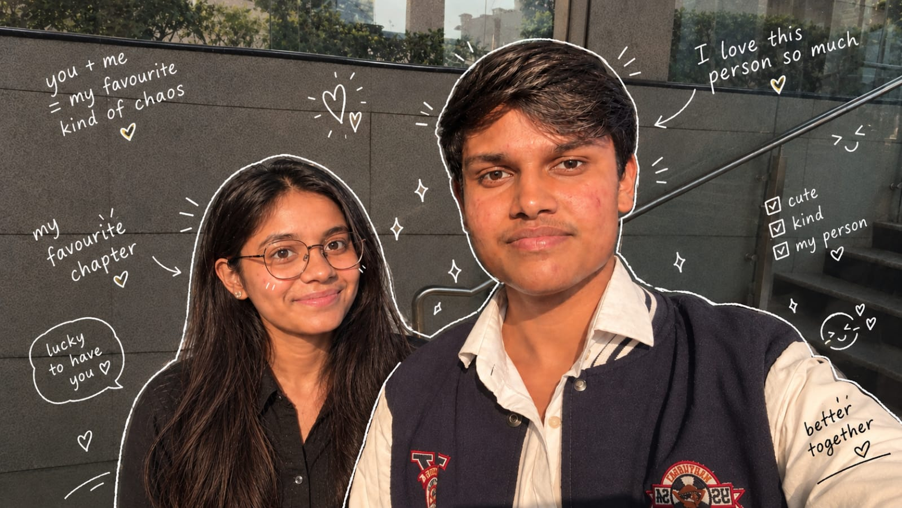
And somehow, this became my favourite part of the story.
And this isn't the ending.
It is just the beginning of so much more.